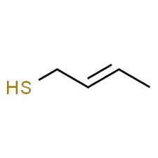

Tutti conoscono quel simpatico animaletto chiamato puzzola, non per averlo mai nè visto nè sentito in realtà, ma per la sua classica presenza in vecchi fumetti e cartoni animati.
Le varie specie di questo animale vivono un po' dappertutto, ma la vera puzzola come la vogliamo intendere è quella americana, la Mephitis mephitis, il cui nome è tutto un programma.
Non mi soffermo a parlare dell'animale, del quale in rete si trova di tutto e di più, ma delle sue essenze odorose che esso emette da speciali ghiandole quando si sente attaccato.
Queste sostanze appartengono quasi tutte al gruppo dei tioli, ovvero sostanze organiche con un -SH nella molecola; ne avevo del resto già accennato in altra occasione.
Il componente odoroso principale è un tiolo insaturo, il 2-buten-1-tiolo, che costituisce circa il 40% del liquido emesso.
L'olezzo in questi composti è dato dal gruppo -SH, unito ad una catena (lineare o ramificata) di pochi atomi di carbonio, con o senza doppi legami:

Segue poi con circa il 25% un isoamiltiolo, precisamente il 3-metil-1-butantiolo.
Con circa il 10% è presente poi un tiolo eterociclico, il 2-chinolinmetantiolo, di peso molecolare più elevato e meno odoroso.
Non è finita, la nostra amica ha altre armi, sempre solforate e presenti in minor quantità ma chimicamente ancora più eleganti, questa volta appartenenti alla classe dei tioacetati:
- il 2-buteniltioacetato
- il 3-metilbutaniltioacetato
- 2-chinolinmetiltioacetato
C'è infine perfino un alcaloide, la 2-metilchinolina, in piccola quantità.
I tioacetati sono meno puzzolenti dei tioli, ma a questi danno origine per idrolisi e determinano la persistenza dell'odore repellente sugli animali spruzzati: nelle serate umide "riemergerà" la puzza che magari di giorno non si sentiva!
Per sbarazzarsi dell'odore di puzzola non serve a niente lavare con acqua, ma occorre trasformare il gruppo -SH ad acido solfonico -SO2-OH per ossidazione, trattando la parte colpita con acqua ossigenata in ambiente alcalino, oppure, se la parte colpita è un oggetto, con il più energico ipoclorito di sodio.
Ecco dimostrato che la guerra chimica non l'abbiamo inventata noi!
2 commenti